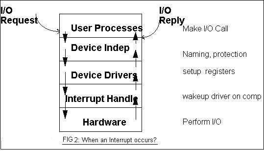
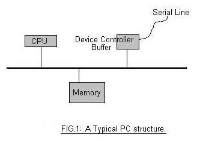
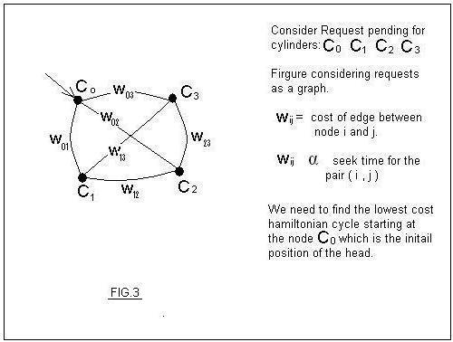

Lecture-39
Operating Systems (CS330)

The firgure above tells what happens when an interrupt is received. The sequence of arrows
show basic stages in interrupt handling.
There are two kinds of things to be done while handling interrupts:
1.Things that must be immediately done: Things like acknowledging interrupts and performing
hardware operations need to be done as soon as interrupts arrive. For eg. acknowledging a key
press interrupt and reading the key code from the keyboard controller buffer. This needs to be
done immediately because the device controller buffer is small and there may be more key presses.
If this data is not soon copied into memory then chances are that we may loose some data.

2.Things that can be delayed: For eg. post processing or cooking of the data received from a terminal device. Anything that can be delayed must be delayed.
The first set of actions are done immediately as the interrupt arrives and hence it is called "top half processing". The second set that can be delayed comes under "bottom half processing". Although they are called half, they are not. Top half can be just 5% and bottom half 95%.
In any interrupt handling, first whatever top half processing needs to be done is done and the bottom half tasks are scheduled. Top half tells the kernel that these bottom half tasks need to be done. The tasks are added in a data structure which is a list of tasks. The added entry is basically some function pointer and its parameters. The kernel performs the bottom half tasks just before returning to the user mode. At this point there are no pending interrupts. This is the only stage when tasks could be done because they might need locks and may cause deadlocks.
1.Caching
2.Layout data on the disk considering seek time and rotation time delays.
3.Disk-scheduling is the third level mechanism. To have a look at its importance consider two processes P which reads from a file f and Q which reads from a file g. If f and g are on cylinder group far away from each other then each time a process gets scheduled we will be wasting a lot of time as seek time delay.
Therefore, disk-scheduling turns out to be fairly important. We can inmprove both access time and the disk bandwith by scheduling the servicing of the disk I/O request in some order. It is basically a part of disk device driver.

Let us consider that there is a list of pending disk requests. Now consider the graph G = (V,E) where V = cylinder group corresponding to all the pending disk requests and E = edge between each pair of vertices such that weight of the edge between vertices Ci and Cj ( note Ci and Cj are cylinder groups) is proportional to the seek time taken by the head to move form Ci to Cj. Now finding the optimal solution is same as finding the lowest cost hamiltonian cycle starting from the initial vertice which is the initial position of the disk arm. But this problem is NP-hard problem. So we try to have approximate algorithms for the same.
Shortest Seek Time First (SSTF): Here we service the request which is closest to the current head position i.e. SSTF algorithm selects the request with the minimum seek time. This uses greedy algorithm and is not optimal. This algorithm is not fair as those requests that are near the center of the disk get undue advantage. This algorithm may cause starvation of some requests. For eg. consider a continual stream of requests arriving near one another. In this case a request far away may get starved. This scenario becomes increasingly likely if the pending-request queue grows larger. Therefore we have good average service time but variance in the service time is huge.
Elevator Algorithm : Here the disk arm starts at one end of the disk, and moves towards the other end, servicing requests as it reaches each cylinder, until it gets to the other end of the disk. At the, other end, the direction of the head movement is reversed, and the servicing continues. The head continuously scans back and forth across the disk. This algorithm is also called as SCAN algorithm. It is a dumb algorithm because the arm travels from one end to the other end even if there is no request pending at the far end. This algorithm is also not the fairest algorithm. It is less efficient than the SSTF algorithm and has a lesser average service time but it has lesser variance in service time than SSTF. Therefore it is more fair than SSTF.
LOOK Scheduling: It is a variation of SCAN scheduling. Here arm goes as far as the final request in each direction. Then it reverses back immediately without going all the way to the end of the disk. This prevents the useless movement of the disk arm and hence increases the average service time.
C-SCAN and C-LOOK scheduling: Like in SCAN, in C-SCAN moves the head from one head to the other servicing the requests along the way with an exception. In this, request gets serviced in one direction only. No request is serviced in the reverse direction or on the return trip. This although decreases the overall average servicing time, it decreases the variance in service time and hence fairness increases significantly. C-LOOK is essentially same as LOOK but with the same sort of modification.